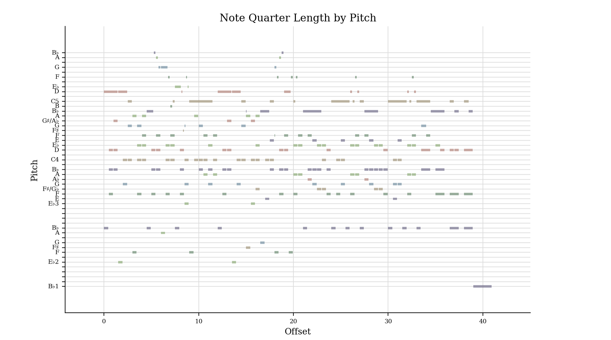
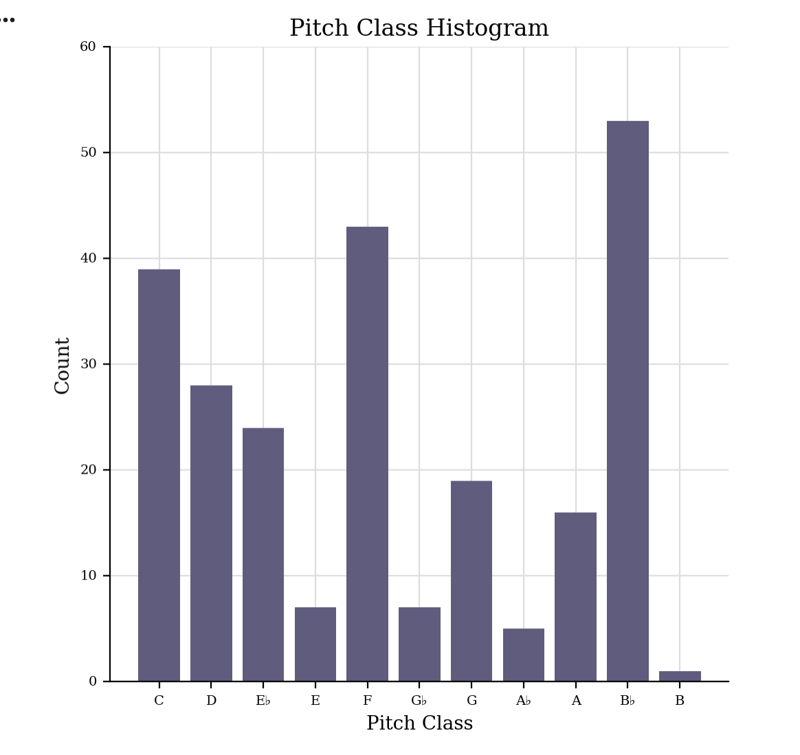

Week 4: jSymbolic Analysis of Chopin – Cantabile in B-flat major, B.84
In this week’s lab, I moved from encoding and visualising my score to computational analysis. Using a MIDI export of Frédéric Chopin’s Cantabile in B-flat major, B.84, I analysed the piece with jSymbolic to extract numerical features that describe its pitch content and rhythm. This helps to confirm things we might already suspect from looking at the score (such as the key and range), but also highlights details that are less obvious by eye.
Task 1 – Generating a jSymbolic Analysis
1. Exporting to MIDI and running jSymbolic
First, I exported my MuseScore version of Cantabile as a
MIDI file using File → Export → MIDI.
I then opened jSymbolic2.jar, added my MIDI file to the analysis list,
and selected a set of pitch- and rhythm-related features. jSymbolic produced
output files in CSV (and XML) format, which I opened in Excel to inspect the
values.
Download links to my jSymbolic output files:
(I will update these filenames to match my actual uploaded files.)
2. Features selected
For this lab, I focused on the required core features:
- Range – the distance in semitones between the lowest and highest pitches in the piece.
- Mean Pitch – the average MIDI pitch value, showing where the music tends to sit register-wise.
- Most Common Pitch Class – the pitch class (0–11) that occurs most frequently; this usually corresponds to the key centre.
- Last Pitch – the final sounding pitch of the piece, often confirming the tonal centre.
- Most Common Rhythmic Value – the rhythmic duration that appears most often (for example, quavers or crotchets).
3. Interpretation of the jSymbolic results
The jSymbolic feature values give a numerical summary of the musical character of the piece:
- The most common pitch class in my analysis corresponds to B♭, which confirms that the piece is centred on B-flat major as expected from the score.
- The range shows a wide span of pitches, typical of Chopin’s piano writing. This suggests that the piece exploits both lower accompaniment tones and higher melodic notes to create contrast.
- The mean pitch lies around the middle register of the piano, indicating that, although the range is large, much of the musical material is concentrated near the central area of the keyboard.
- The last pitch reinforces the tonic, providing a sense of closure that matches the tonal expectations of a lyrical, cantabile-style piece.
- The most common rhythmic value reflects the underlying pulse of the piece. In my analysis, this value matches the predominant note length seen in the score, confirming the impression of a steady, singing line with relatively consistent rhythmic motion.
Overall, the jSymbolic results align with what I can see and hear: a lyrical piece in B-flat major with a wide but piano-typical range, a clear tonic focus, and mostly stepwise melodic motion supported by a consistent, flowing rhythm. The advantage of jSymbolic is that it turns these intuitive observations into explicit data, which could be compared directly with other pieces in a larger encoded collection.
Task 2 – music21 Piano Roll and Pitch Histogram
For the second task this week, I used music21 in Google Colab to analyse my MusicXML encoding of Chopin’s Cantabile in B-flat major, B.84. Working in Colab meant I did not need to install anything on my Mac, and I could directly generate graphical analyses of my piece.
Piano Roll
The piano roll below shows each note visually according to when it occurs and how long it lasts. This helps to illustrate the texture and flow of the music over time.

The piano roll reveals a clear musical texture: the right hand plays a continuous, flowing melodic line with mostly stepwise motion, while the left hand supports it with longer, harmonically stable notes. This supports the lyrical and “cantabile” character of the piece.
Pitch-Class Histogram
The pitch-class histogram shows how frequently each pitch class (0–11) appears throughout the piece. This gives a clear picture of the tonal centre.

The histogram confirms that B♭ is the most common pitch class, matching both the key signature and the Most Common Pitch Class from my jSymbolic analysis. Other highly frequent pitch classes correspond to normal scale degrees of B-flat major (such as F and D), reinforcing a strong tonal centre.
Together, the music21 graphs and the jSymbolic features give a consistent analytical picture of the piece. Both tools highlight its wide range, strong B-flat tonal focus, and lyrical melodic writing with mostly stepwise motion. These combined approaches show how encoded notation can be analysed from multiple perspectives.